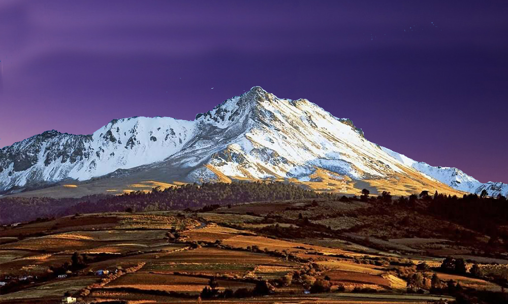

Nevado de Toluca
Estado de México
El Nevado de Toluca es un volcán ubicado en el centro del Estado de México, a unos 80 km al suroeste de la Ciudad de México. Con una altura de 4,680 metros sobre el nivel del mar, es la cuarta montaña más alta de México y se encuentra dentro del Parque Nacional Nevado de Toluca.
El Nevado de Toluca es conocido por sus dos cráteres, uno grande y otro pequeño, que se han formado por la actividad volcánica. El cráter grande, llamado Lago de la Luna, tiene un diámetro de 1,5 kilómetros y está lleno de agua cristalina que cambia de color dependiendo de la hora del día y la posición del sol. El cráter pequeño, llamado Lago del Sol, es más pequeño y se encuentra en la cima del volcán.
Además de los lagos, el Nevado de Toluca cuenta con una gran cantidad de senderos y caminos que permiten a los visitantes explorar el paisaje montañoso y disfrutar de impresionantes vistas panorámicas. También hay áreas de picnic, campamentos y refugios para los visitantes que deseen pasar la noche en la montaña.
El clima en el Nevado de Toluca es fresco y húmedo, con una temperatura promedio de alrededor de 10 grados Celsius. La mejor época para visitar el volcán es entre noviembre y marzo, cuando el clima es más fresco y hay menos lluvias.
El Nevado de Toluca es un destino popular para los amantes de la naturaleza, los excursionistas y los escaladores. También es una importante fuente de agua para la Ciudad de México y otras ciudades cercanas.